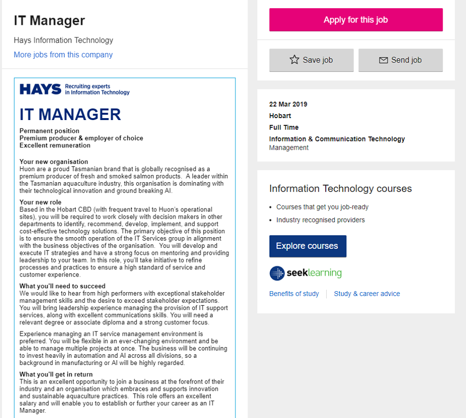
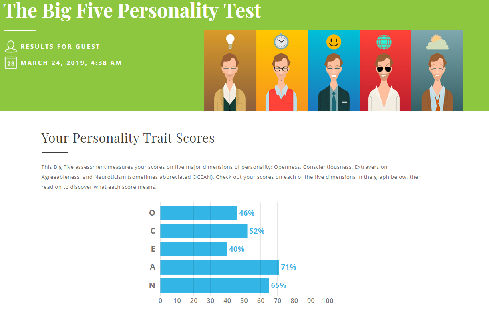
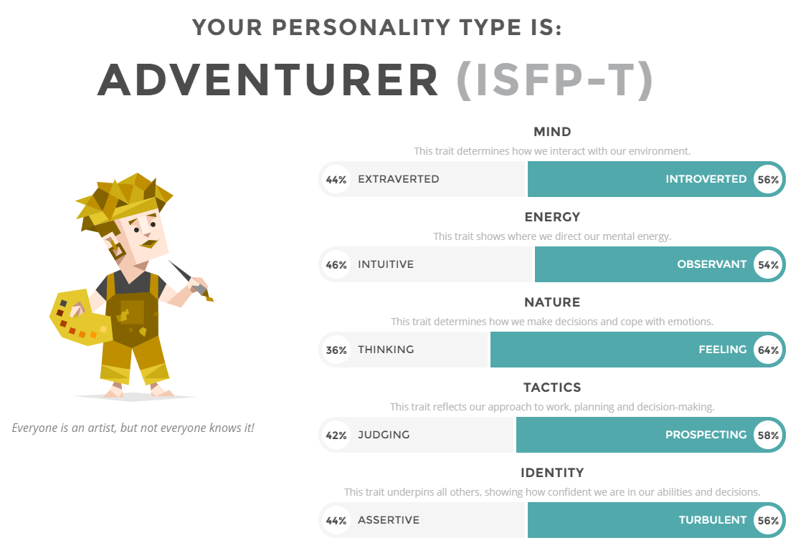
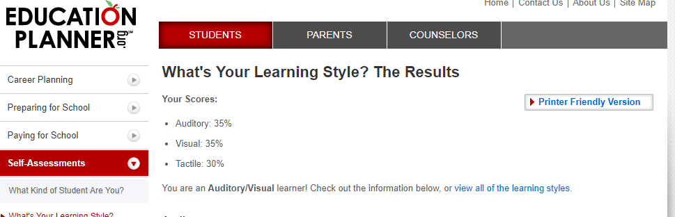
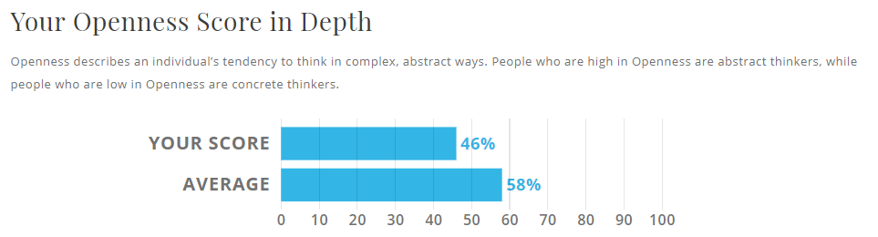

ITTP Project - 2019
Jin Han Yap

Student Number: s3543058
D.O.B.: 01/12/1996
Email address: s3543058@student.rmit.edu.au
My Profile
I am a Malaysian born Chinese, born overseas but moved to Australia back in 2001, when i was four years old. My main language is English, but i do understand most Cantonese and am able to speak it a little bit. I live on the East side of the city in the Ringwood suburbs, Went to highschool at Ringwood Secondary College. I then started an Associate Degree in Engineering at RMIT specializing in Networking which i studied for a couple of years, and thus brings me to current where i Currently my hobbies include playing video games on the computer (FPS mostly) and also playing snooker with friends, which we also formed a friendly team together.
Interest in IT:
I have had an interest in IT/gaming ever since i use to play Runescape back in the day on my old family computer back in primary school. But only really started using computers frequently when I owned my first laptop back in HIgh school year 9. I enjoyed the vast possibilities of tasks that a computer could perform from entertainment to productive learning and everything in between. My class also played Call of Duty all together whenever we had a relaxed teacher in class.Ever since then i have enjoyed gaming and using computers all together. After graduating High school, i decided to buy PC parts to build my own custom PC from scratch, It was very enjoyable and i learnt alot from doing so. From doing my Associate Degree in Networking, it has taught me the fundamentals about networking and also IT including, setting up your own personalized connection system, and also some extra IT related skills, such as coding in C++. In the project that we created in the final year, was to make a website used as a guide to operate a basic CISCO router and how to configure it.
Ideal Job:
This IT Managing job position in HUON, requires a technician that is able to analyse the current businesses IT infrastructure and to develop and implement cost-effective technology solutions to further a higher standard of service.The candidate for this position would need someone that has great stakeholder management skills and is very customer focused. They would also need a vast knowledge on IT systems and support. Currently as i am not, i am not experienced enough to accept this job. I lack the knowledge in the IT field to converse with stakeholders to formulate and IT solutions to benefit the company. Although my communication skills are fine, my current lack of knowledge stops me from acquiring positions in the IT industry. I would hopefully be able to change this and acquire IT knowledge throughout studying in this bachelor, and through my own prospects and explorations into the IT field.
Personal Profile:
After going through each of the online tests, I find that it is a accurate representation of myself and my behaviour. I am more of a introverted person that usually is quieter when in social situations. But from doing the Myers-Briggs Test, I was surprised by the nature category as i would say that my actions are more influenced by thought rather than feeling, as I am more of a reserved person. From the learning style test, i would agree that I am more of a hands on learner. I dislike learning straight from a textbook to my memory and i feel that sometimes it doesn't help me to learn. In a team setting I would most likely just be a supporting member of the group. I would mostly listen to other members ideas, and expand on it further. I would most of the time let the other members to create the ideas and I am not particularly fussed on what the project is about, more so that it would be done to a satisfactory level. When forming a team, I should find other members that may have a strong point of view, and have bright ideas. I then further add onto their ideas and to tidy it up.
  Project ideas:

My dream project would involve having a single application/service to combine all types of multimedia entertainment for users all on the one app. I had two ideas for the application,this app would either allow users to connect their entertainment accounts to it for an easy way to access all of them at any time on their computer of hand held device. This would include major social networking websites as Facebook and Twitter, video streaming websites such as Youtube and Netflix, and also large gaming application platforms such as Steam, and Epic Games. Or it would have its own custom system and application launchers which would be similar to the big applications of current day, This would allow users to only require one account to log in, and have access to all available online applications/stores for whichever service they require. It would allow the users to play games and watch movies off the same application to avoid having separate accounts and separate subscriptions, and make it easy for users to use and manage.their account.

In this current day ruled by media, everyone is always on their phone or computer browsing either their social feed or watching a movie to unwind from a tiring day. This application would make their experience more pleasant as they have less to manage over their account and everything is accessible and available for them to use with minimal effort needed. They could also customize the applications to select what service they would require and have a tailored plan to suit their needs. These large application rule over today's current population, reports from the BBC website show that Netflix currently consumes at least 15% of the total global network traffic alone *. Imagine if this universal application was made, it could control the majority of the network traffic .
*(Netflix viewing eats up world's data", BBC News, 2019. [Online]. Available: https://www.bbc.com/news/technology-45745362?ocid=socialflow_twitter. [Accessed: 31- Mar- 2019].)
This Multimedia platform would involve having a large collection of application services. This would include video streaming services, that could stream TV shows and the latest movies, and also include a community video sharing platform such as Youtube. This would allow users a large variety of content just on those alone. The application would also include a social networking site such as Facebook, and allow users to instant message and share files/pictures for their friends to see online. Lastly it would also include a large gaming platform such as Steam, where users could purchase New Triple A titles, and also explore the world of Indie games. Similar to Steam it would also have an in application friends list and a voice chatting system for any hardcore gamers.

To create an application like this you would need a large database / cloud system to store all of the multimedia files. You would also need massive servers to upkeep the whole system, and networking utilities to allow connectivity to the outside. For this project to work, the team would need a great understanding on networking concepts. They will need to have a main server and allow connections to their data servers and also other users. If the application was to be made out of no other external partners such as Youtube and Netflix, you would need teams to constantly maintain and and update each application.
If this project were to be successfully completed, it would allow users to have the easy access to all of their entertainment platforms. This would make it easier for users to control their subscription payments and leave less of a hassle going through different apps and creating multiple numerous accounts